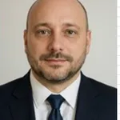
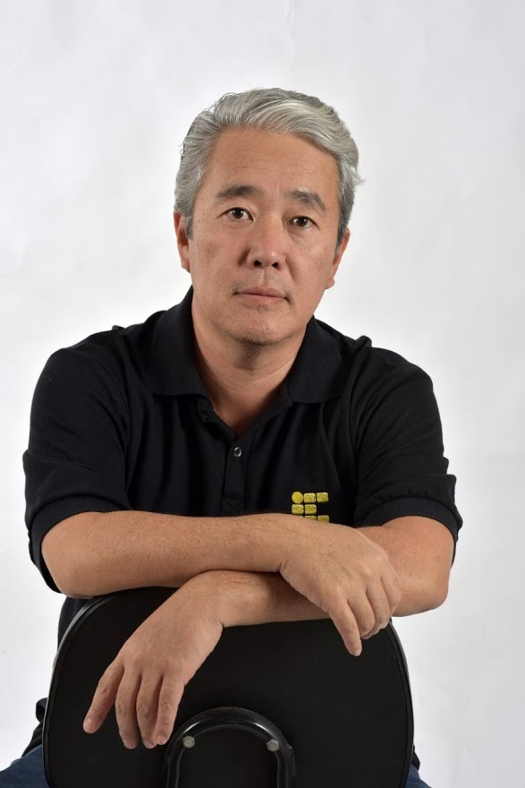
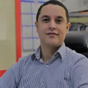

Palestrantes

Renaud Teixeira
Especialista em negócios com Inteligência Artificial

Cassio Agnaldo Onodera
Professor do IFSP - Instituto Federal de Educação, Ciência e Tecnologia de São Paulo - Campus de Birigui

Edson Koenigkan Junior
Palestrante de Motivacao e Desenvolvimento Humano
Getúlio Teruo Tateoki
Professor EBTT - IFSP Birigui
Manoel Gomes de Andrade
Professor EBTT - IFSP Birigui
Rodrigo Albino
Professor EBTT - IFSP Birigui
Rodrigo Dos Santos Honda
Professor EBTT - IFSP Birigui
Thiago Glissoi Lopes
Professor EBTT - IFSP Birigui

Rafael de Paiva Garcia
Diretor Adjunto Educacional - IFSP Birigui
 23.18.49_6d29cf47.jpg)